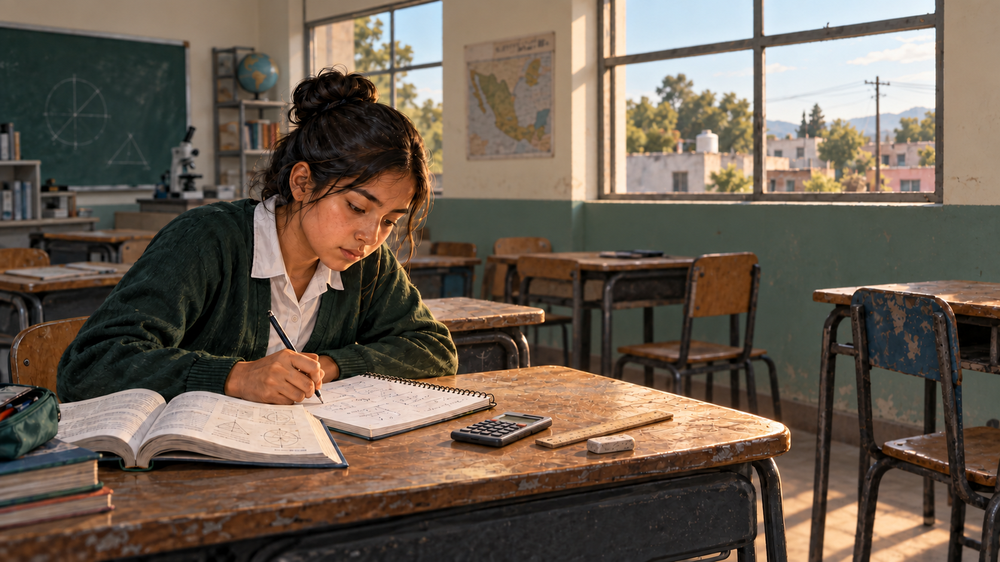

Análisis educativo
México ante la prueba PISA
El problema no es cuánto pueden aprender los estudiantes mexicanos, sino las condiciones en que intentan hacerlo.
El diagnóstico educativo de México reúne dos realidades que deben examinarse juntas: aprendizajes básicos insuficientes y estudiantes que expresan curiosidad, perseverancia y confianza en el apoyo de sus docentes. Este artículo analiza esa tensión a partir de los resultados y las condiciones de aprendizaje descritos en PISA. Examina las brechas de desempeño, la equidad, los recursos escolares, la digitalización y la cobertura de la evaluación, y plantea prioridades para que la inclusión educativa se traduzca en competencias científicas, matemáticas y lectoras sólidas.
Introducción
Este análisis surgió a raíz de la cobertura mediática sobre los bajos resultados de los estudiantes mexicanos en PISA 2025. La intención es examinar las cifras más allá de los titulares y situarlas en su contexto, a partir del informe internacional y de la nota sobre México publicados por la Organización para la Cooperación y el Desarrollo Económicos (OCDE; 2026a, 2026b).
Hablar de calidad educativa exige mirar tanto el acceso a la escuela como los aprendizajes que se construyen dentro de ella. Incorporar a más jóvenes es un avance necesario, pero el desafío también consiste en que puedan comprender lo que leen, interpretar información y utilizar las matemáticas y las ciencias para afrontar problemas. La permanencia escolar y el desarrollo de esas capacidades deben formar parte de una misma conversación.
Los resultados de PISA suelen discutirse a través de promedios y posiciones internacionales. Sin embargo, la lectura del diagnóstico mexicano requiere considerar también qué proporción de estudiantes alcanza las competencias básicas, cómo se distribuyen las oportunidades y en qué condiciones enseñan los docentes. Asimismo, las comparaciones entre evaluaciones deben tomar en cuenta los cambios en la población que participa.

El análisis que sigue reúne esas dimensiones para explorar una pregunta central: ¿por qué la disposición para aprender y el apoyo docente percibido no se traducen suficientemente en mejores resultados? Examinar conjuntamente el desempeño, las condiciones materiales y las experiencias de los estudiantes permite identificar prioridades más precisas que las que surgirían de observar únicamente un puntaje.
Diagnóstico general
México no está ante un desplome reciente generalizado, sino ante algo quizá más preocupante: un estancamiento prolongado en niveles bajos, acompañado de un deterioro sostenido en matemáticas y lectura. Una insignificante recuperación en ciencias no cambia el panorama estructural.
En otras palabras, México se mantuvo aproximadamente igual en ciencias y lectura, pero retrocedió en matemáticas. En la perspectiva 2015–2025, ciencias permaneció estable, mientras lectura cayó unos 15 puntos y matemáticas 22 puntos.
El problema principal está en las competencias básicas
Los promedios esconden la parte más grave:
- Apenas 50% alcanza el nivel básico en ciencias.
- Solamente 50% lo alcanza en lectura.
- En matemáticas, la proporción cae a 30%.
- El 42% se encuentra por debajo del nivel básico en las tres áreas simultáneamente, frente al 20% de la OCDE.
- Solo 0.5% es estudiante de alto rendimiento en al menos una de las tres áreas, frente al 12% de la OCDE.
Esto significa que siete de cada diez estudiantes evaluados no dominan siquiera las competencias matemáticas mínimas esperadas para desenvolverse ante problemas cotidianos. Además, México prácticamente no está formando estudiantes en los niveles avanzados que alimentan posteriormente las carreras científicas, tecnológicas e ingenieriles.
Frente a América Latina, México se encuentra en una franja media-alta de los países participantes, especialmente en matemáticas y resolución computacional de problemas. Sin embargo, continúa detrás de Chile y Uruguay en las cuatro áreas, y también de Costa Rica en ciencias y lectura. Por lo tanto, México no ocupa el último lugar regional, pero tampoco es un referente latinoamericano.
La aparente equidad requiere una lectura cuidadosa
La diferencia en ciencias entre el 25% socioeconómicamente más favorecido y el 25% más desfavorecido es de 68 puntos, menor que los 85 puntos de la OCDE. El nivel socioeconómico explica aproximadamente 12% de la variación del desempeño, prácticamente igual que en la OCDE.
Esto parece relativamente positivo, pero no necesariamente significa que México haya alcanzado una educación equitativa. También puede reflejar una distribución comprimida en los niveles bajos. Es decir, la distancia entre grupos es menor, en parte, porque incluso los estudiantes favorecidos tienen pocas probabilidades de alcanzar los niveles superiores. Una brecha pequeña no basta cuando casi todo el sistema permanece por debajo del estándar internacional.
Existe, además, una diferencia de género poco favorable:
- En ciencias, los hombres superan a las mujeres por 13 puntos.
- En matemáticas, la ventaja masculina es de 16 puntos.
- En lectura, las mujeres superan a los hombres por 12 puntos.
La brecha mexicana en ciencias a favor de los hombres es una de las mayores entre los participantes, y la proporción de mujeres que no alcanza el nivel básico supera entre seis y diez puntos porcentuales a la de los hombres.
Los estudiantes sí muestran disposición para aprender
Este es uno de los hallazgos más interesantes. El problema mexicano no parece ser simplemente falta de interés:
- 80% se considera curioso, frente a 73% en la OCDE.
- 76% afirma esforzarse más cuando una tarea se vuelve difícil, frente a 60% en la OCDE.
- Solo 11% considera que la escuela ha sido una pérdida de tiempo, frente a 24% en la OCDE.
- Los índices de perseverancia, curiosidad, búsqueda de ayuda y adaptabilidad cognitiva están por encima del promedio internacional.
Al mismo tiempo, solo 61% manifiesta una mentalidad de crecimiento, frente a 69% en la OCDE, y todavía son débiles algunas prácticas de autorregulación y planificación del estudio.
La lectura más razonable es que México dispone de estudiantes interesados y perseverantes, pero el sistema no está convirtiendo suficientemente esa disposición en aprendizaje verificable. Esto apunta más hacia problemas de recursos, enseñanza, organización y continuidad educativa que hacia una supuesta apatía general de los jóvenes.
Buen apoyo docente, pero condiciones materiales insuficientes
Los estudiantes mexicanos perciben un apoyo docente elevado:
- 81% dice que el profesor se interesa por el aprendizaje de cada estudiante.
- 77% señala que el profesor continúa enseñando hasta que los alumnos comprenden.
- 83% afirma recibir ayuda adicional cuando la necesita.
No obstante, 48% estudia en escuelas donde la falta de materiales educativos obstaculiza la enseñanza y 50% donde las deficiencias de infraestructura afectan la instrucción. Además, el apoyo familiar semanal disminuyó entre 2022 y 2025.
Por lo tanto, el informe no respalda una explicación simplista basada en “malos maestros”. Los docentes son percibidos positivamente, pero trabajan dentro de un sistema con carencias materiales, grupos numerosos, desigual disponibilidad tecnológica y debilitamiento del acompañamiento familiar.
Digitalización e inteligencia artificial
México presenta una adopción rápida de la IA, pero una preparación institucional más débil:
- 47% utiliza chatbots de IA para aprender al menos una vez por semana.
- 59% declara haber aprendido a evaluar información generada por IA, ligeramente por debajo del 63% de la OCDE.
- 37% reporta distracción frecuente por dispositivos en las clases de ciencias, frente a 28% en la OCDE.
- Solo 27% estudia en escuelas que prohíben los teléfonos, frente a 49% en la OCDE.
La situación puede resumirse como uso tecnológico sin una infraestructura y una gobernanza pedagógica equivalentes. Aun así, la resolución computacional de problemas es una fortaleza relativa: México obtiene 453 puntos, todavía por debajo de la OCDE, pero mejor de lo esperado considerando su bajo desempeño en ciencias.
Una paradoja ambiental
Solo 50% alcanza el nivel básico en ciencias ambientales, pero 85% desea contribuir a la protección ambiental mediante su futuro trabajo, muy por encima del 62% de la OCDE. También son elevados los indicadores de acción y eficacia ambiental colectiva.
Por lo tanto, existe compromiso ambiental pero sin suficiente alfabetización científica. Es una oportunidad clara para vincular la enseñanza de ciencias con problemas mexicanos concretos como agua, energía, contaminación, biodiversidad y cambio climático.
La cautela metodológica más importante
En México participaron 7,843 estudiantes de 297 escuelas. Representan aproximadamente 1.58 millones de jóvenes, pero únicamente alrededor del 69% de toda la población mexicana de 15 años. El resto estaba fuera de la población cubierta por PISA, principalmente por no estar escolarizado en los grados elegibles, encontrarse rezagado o haber sido excluido conforme a las reglas del estudio. Los datos mexicanos sí cumplieron las normas técnicas de calidad.
Además, entre 2015 y 2025 aumentó la cobertura de la educación secundaria. Esto incorporó a jóvenes previamente marginados, quienes suelen enfrentar mayores desventajas. Por eso, parte de la caída del promedio puede deberse a una inclusión más amplia y no exclusivamente a un empeoramiento de las escuelas. Sin embargo, esto no elimina el problema; más bien, revela que México ha avanzado más en incorporar estudiantes que en garantizarles aprendizajes suficientes.
Conclusiones
La situación mexicana puede definirse como inclusión creciente, estudiantes con buena disposición y apoyo docente valorado, pero aprendizaje básico insuficiente y casi inexistencia de excelencia académica.
Las prioridades que surgen del informe son bastante claras:
- Recuperar aprendizajes fundamentales, particularmente en matemáticas y comprensión lectora.
- Enseñar menos contenidos superficialmente y asegurar el dominio real de los conceptos esenciales.
- Fortalecer laboratorios, bibliotecas, materiales, conectividad y disponibilidad efectiva de equipos.
- Convertir el uso de IA en aprendizaje crítico, no solo en acceso a herramientas.
- Atender específicamente la desventaja de las mujeres en ciencias y matemáticas.
- Mantener la expansión de la cobertura sin aceptar que la inclusión deba traducirse en enseñanza de baja calidad.
La conclusión más fuerte no es que los estudiantes mexicanos carezcan de interés. México tiene una reserva importante de curiosidad, perseverancia y aspiraciones, pero su sistema educativo todavía no consigue transformarla en competencias científicas, matemáticas y lectoras sólidas.
Referencias
- OECD. (2026a). PISA 2025 results (Volume I): Future-ready students. PISA, OECD Publishing, Paris. https://doi.org/10.1787/73451bc5-en
- OECD. (2026b). PISA 2025 results (Volume I): Country notes: Mexico. PISA, OECD Publishing, Paris.
Revisión gramatical asistida por Grammarly.